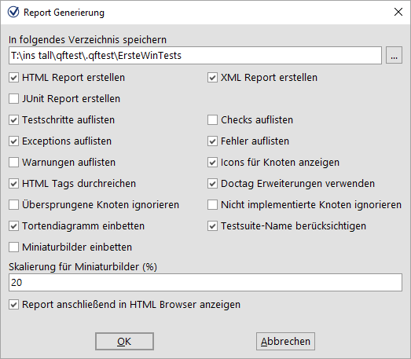
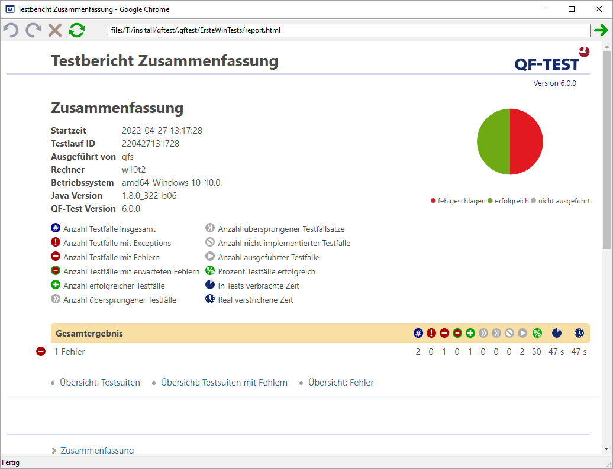

| Version 6.0.3 |
Im Qualitätssicherungsprozess ist es wichtig, Testergebnisse zu dokumentieren und auch zu archivieren. QF-Test bietet die Möglichkeit, aus Protokollen Testreports zu generieren. Wir wollen dies für das gerade aufgezeichnete Protokoll beispielhaft durchführen.
|
|  | ||
|
| Abbildung 19.17: Auswahldialog für die Reportgenerierung | ||
Im ersten Feld können Sie den Dateinamen des Reports festlegen. QF-Test bietet drei Arten von Reports - HTML, XML und JUnit Format. Das XML Format können Sie verwenden, wenn Sie die Reports zum Beispiel mit Hilfe eigener XSLT Stylesheets selbst gestalten wollen. JUnit Reports erweisen sich als hilfreich, wenn es darum geht, Resultate in Build- oder Testmanagement-Tools zu importieren.
Wir wollen uns nun einen einfachen HTML Report zu unserem letzten Testlauf erzeugen lassen.
Anschließend sollte sich Ihr Browser automatisch mit einem Ergebnis äquivalent zum folgenden Bild öffnen:
|
|  | ||
|
| Abbildung 19.18: Ein HTML Report | ||
Der Testbericht beginnt mit einer Zusammenfassung mit allgemeinen Systeminformationen im linken Bereich, einer Legende der verwendeten Symbole rechts, einem Überblicks-Tortendiagramm in der Mitte und dem Gesamtergebnis darunter. In unserem Fall bei einem fehlerhaften von zwei ausgeführten Testfällen eine Erfolgsquote von 50%.
Auf die Zusammenfassung folgen drei Übersichten:
Die Reporterstellung in QF-Test ist ein praktisches Hilfsmittel, um einen Überblick über einen Testlauf zu gewinnen und ein Dokument zu Präsentations- und Archivierungszwecken zu erstellen.
| Letzte Änderung: 6.9.2022 Copyright © 2002-2022 Quality First Software GmbH |